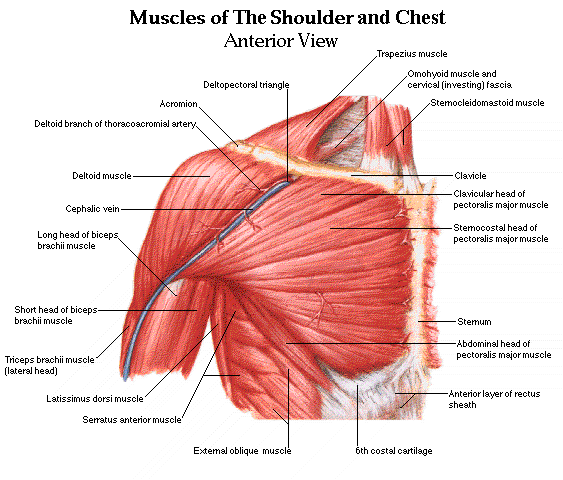
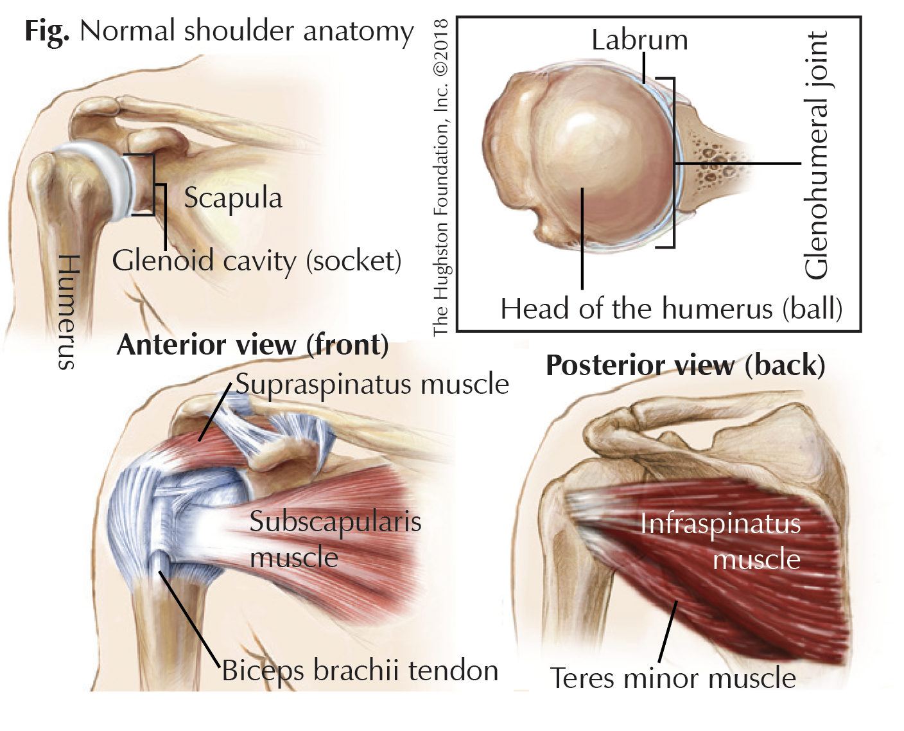
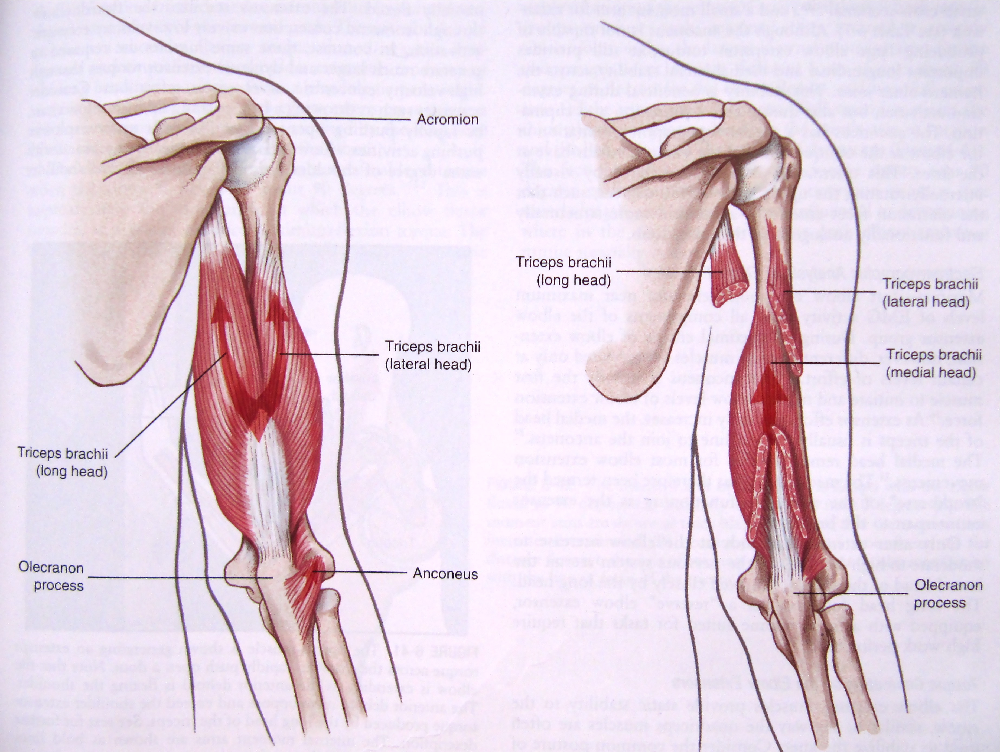
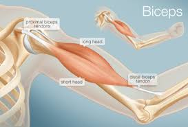
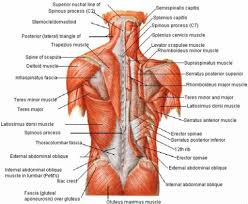
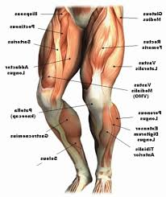
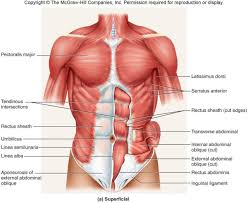
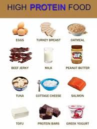
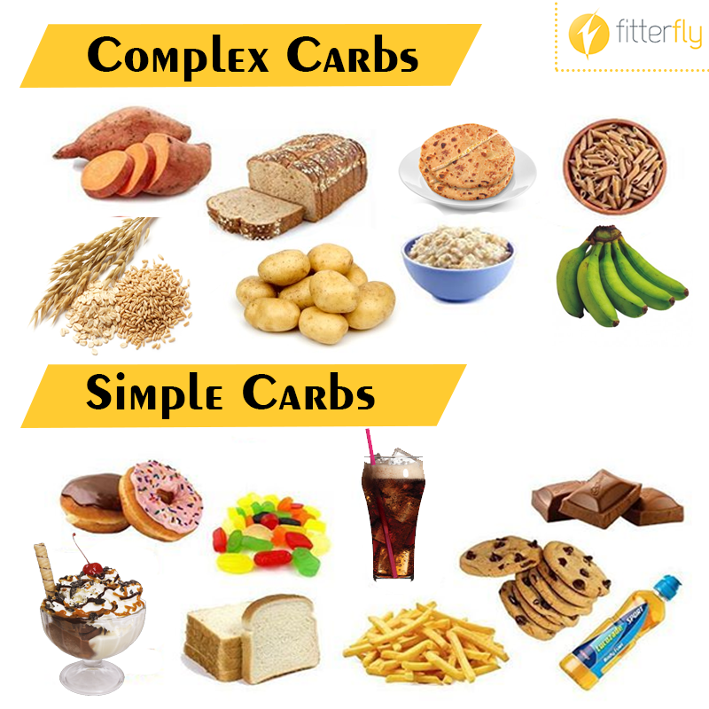
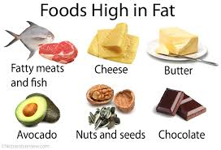

The chest or known as the pectoral muscle is located on the anterior chest wall. Within the pectoral region of the chest it's made up of four muscles. The pectoralis major, pectoralis minor, serratus anterior and subclavius. There are many exercises that hit the chest muscle groups. Here are a few that are well known and are most affective. (Dumbbell Squeeze Press, Incline Barbell Bench Press, Close-Grip Barbell Bench Press, Chest Dips, and Push-Ups)
The shoulders are known as a primary muscle group that supports the shoulder joints known as the rotator cuff muscles. The four shoulder muscles that make up the rotator cuff muscles are supraspinatus, infraspinatus, teres minor, and subscapularis. There are many exercises that hit the shoulders muscle groups. However the most common known shoulder muscles are identify as the trapezius, latissimus dorsi, levator scapulae, and rhomboids. As well as the deltoids. Here are a few that are well known and most affective. (Barbell Overhead Shoulder Press, Front Raise, Reverse Pec Deck Fly, and Dumbbell Lateral Raise)
The tricep also known as triceps brachii, also name the "three-headed muscle of the arm" is a large muscle on the back of the upper limb of many vertebrates. The tricep is made up of three heads the medial, lateral, and long head. This muscle is also responsible for extension of the elbow joint. There are many exercises that hit the three heads of the tricep. Here are a few that are well known and affective. (Rope Tricep Pushdown, Tricep Dips, Overhead Extension, and Skullcrushers)
The biceps are a large muscle group that is located on the front section of the upper arm. Known as the biceps brachi and the "two-headed muscle of the arm", this muscle group primary function is to rotate the forearm and flex the elbow. The bicep is made up of two heads called the long and short head. The long head is identify as the glenoid and the short head is identify as the coracoid. There are many exercises that hit the bicep muscles. Here are a few that are well known and affective. (Standing Cable Curl, Standing Barbell Curl, Zottoman Curl, and Decline Dumbbell Curl)
The back is made up of many muscles due to the back and shoulder sharing a lot of common exercises and how the shoulder is connected more with back movement. The back is made up of the trapezius, latissimus dorsi, levator scapulae, and the rhomboids. The trapezius and the latissimus dorsi lie the most superficially, with the traps covering the rhomboids and levator scapulae. There are many excerises that hit the back muscle groups. Here are a few that are well known and affective. (Barbell Deadlift, Bent-Over Barbell Row, Wide-Grip Pull-Up, Reverse-Grip Smith Machine Row, and Close-Grip Pull-Down)
The legs are made up of major muscle groups that support a lot of our major leg movements and more. The muscle that make up our legs are quadriceps, hamstrings, calves, and glutes. Those are the main muscles that make up our legs, however there are three surface muscle of the quadriceps which are the rectus femoris, the vastus medialis and the vastus lateralis. There are many excerises that hit the leg muscle groups. Here are a few that are well known and affective. (Goblet Squat, Banded Lateral Walk, Single-Leg Deadlift, Sumo Deadlift, and Suitcase Deadlift)
The abs or the abdominal muscles allows your body to keep yourself stable and balanced. The abs are divided into four muscle groups. The external obliques, the internal obliques, the transversus abdominis, and the rectus abdominis. With this muscle group there are tons of exercise varations that allow us to develope this muscle. Here are a few well known excerises that you may be familiar with. (Crunch, Heel Taps, Plank, Mountain Climbers, and Leg Raises) 
A type of food that required in a large amount in the diet. These large amounts of food are broken up in three different categories protein, carb, and fat.
any of a class of nitrogenous organic compounds that consist of large molecules composed of one or more long chains of amino acids and are an essential part of all living organisms, especially as structural components of body tissues such as muscle, hair, collagen, etc., and as enzymes and antibodies.
any of a large group of organic compounds occurring in foods and living tissues and including sugars, starch, and cellulose. They contain hydrogen and oxygen in the same ratio as water (2:1) and typically can be broken down to release energy in the animal body.
Fats are nutrients that give you energy. Fats have 9 calories in each gram. Fats help in the absorption of fat-soluble vitamins A, D, E, and K. Fats are either saturated or unsaturated, and most foods with fat have both types. But usually there is more of one kind of fat than the other.
a chemical element or substance (such as calcium or vitamin C) that is essential in minute amounts to the growth and health of a living organisms. An example of a micronutrients food is spinach, kale, berries, and lettuce.
Calories. A unit of energy in food. Carbohydrates, fats, protein, and alcohol in the foods and drinks we eat provide food energy or "calories."
Now that you understand the concept of what occurs when you property understand food and your body
, you just got to figure out what works best for you. Everyone is different in terms of body type, strength, what food works best for them,
and other key factors. Most importantly your fitness goals. Are you maintaining weight, you want to gain weight or loose weight?
To start we must figure out your daily caloric intake. This is bascially where we determine how much an individual is suppose to eat.
To calcuate your calories we will use a marco calcuator. Here is the link:
Marco Calcuator
Once you figure out your calorie intake we must figure out a diet plan that fits best for you.
Here is a Document Link that will show you what types of food are best when dieting and overall health,
as well as an exmaple of a meal plan from one of my clients:
Nutrition Example
Now that we went over food, we need to figure out a workout split for you.
This will allow you to determine how will you spend your time at the gym. There are 4 ways to create your workout splits.
Its divided up into how well inform or how advance you are in the gym.
Here are four links to the different splits that are made in my personal training program:
3 Day Full Body Workout Split
4 Day Upper and Lower Body Workout Split
5 Day Push,Pull,Leg, Upper, and Lower Split
6 Day Push Pull Leg Split
And there you go, everything else is up to you. Remember the effort you put in the gym lifting weights and doing cardio same thing applies in a diet.
Do your best to stay on track and keep up with your fitness goals
If you like what you see and would love to recieve Personal Training or a Custom Nutrition Plan, follow
me on my Instagram page to discuss the ulimate plan to help you accomplish your fitness Goals.
@_sicko_fit.ness657_